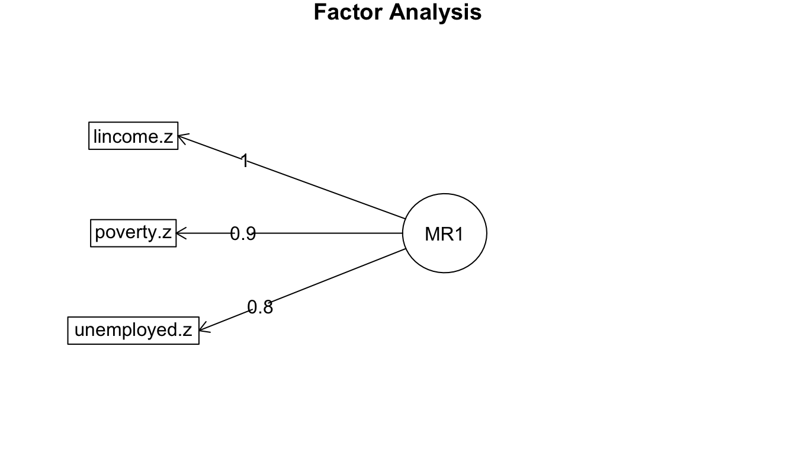

Multicollinearity and Scale Creation
The problem of multicollinearity arises when the independent variables in a linear model are highly correlated with one another. In such a case it is possible to predict with reasonable accuracy the value of one independent variable based on all of the other independent variables in the model.
Multicollinearity creates problem for model estimation in two ways. First, multicollinearity between independent variables will increase the standard error on regression coefficients making it difficult to identify statistically significant effects. Second, in nested models with highly collinear variables, results from model to model can be highly variable and inconsistent. It is not unusual that two highly collinear variables both produce substantively large and statistically significant effects when put in a model separately, but when put in together, both variables fail to produce a statistically significant effect.
The intuition behind why this happens is fairly straightforward. If two independent variables are highly correlated with one another, then when they are both included in a model, it is difficult to determine which variable is actually driving the effect, because there are relatively few cases where the two variables are different. Thus, the two variables are effectively blowing each other up in the full model.
Avoid the Singularity
Structural multicollinearity occurs when one variable is perfectly predicted by some combination of other variables. In this situation, a model with all of these variables cannot be estimated unless one variable is dropped.
To provide a simple example of perfect multicollinearity, I have coded a variable in the crime dataset for the percent female in a state. This term is perfectly collinear with the variable percent male in a state and thus it will cause problems for model estimation if I include them both:
##
## Call:
## lm(formula = Violent ~ PctMale + PctFemale, data = crimes)
##
## Residuals:
## Min 1Q Median 3Q Max
## -293.57 -104.01 -54.44 88.98 783.97
##
## Coefficients: (1 not defined because of singularities)
## Estimate Std. Error t value Pr(>|t|)
## (Intercept) 4317.26 1628.20 2.652 0.0108 *
## PctMale -79.75 33.01 -2.416 0.0195 *
## PctFemale NA NA NA NA
## ---
## Signif. codes: 0 '***' 0.001 '**' 0.01 '*' 0.05 '.' 0.1 ' ' 1
##
## Residual standard error: 186.5 on 49 degrees of freedom
## Multiple R-squared: 0.1064, Adjusted R-squared: 0.08819
## F-statistic: 5.836 on 1 and 49 DF, p-value: 0.01948Note that the result for PctFemale is missing and the note above the coefficient table tells us that one variable is not defined because of a “singularity.” The singularity here is a matrix singularity which technically means that no inverse matrix exists for the design matrix of \(X\). However, the intuition here is more straightforward: PctFemale contains no information that is not already contained in PctMale so it is impossible to predict separate effects for each variable. A 1% increase in the percent male means a 1% increase in the percent female, and vice versa.
We have already seen an example of perfect multicollinearity in the case of dummy variables for categorical variables. We always have to leave one dummy variable out of the model to serve as the reference category. This is because once we know the results for all but one category, we also know the results for that category. Lets say I have four categories of marital status: never married, married, widowed, and divorced. If I know you are not married, widowed, or divorced, then by process of elimination you must be never married.
Structural multicollinearity is generally a specification error by the researcher rather than a true problem with the data. What we are more concerned about is data-based multicollinearity in which one variable can be predicted with high but not perfect accuracy by other variables in the model.
Detecting Data-Based Multicollinearity
As an example for this section, we will use data that I have collected with Nicole Marwell on the the contracting out of social services in New York City. The data were collected from 1997-2001 and contain information on the amount of dollars per capita going to neighborhoods in NYC for social services that were contracted out to non-profit organization. Our key concern here is with the distribution of this money and whether or not it was it going to more socioeconomically disadvantaged neighborhoods or more socioeconomically advantaged neighborhoods. The unit of analysis for the dataset is a “health area” which is a bureaucratic unit used by the city government that loosely corresponds to a neighborhood. The dataset has four variables:
amtcapita: the amount of dollars received by a health area divided by population size. This variable is heavily right skewed so we log it in all of the models.poverty: the poverty rate in the health area.unemployed: the unemployment rate in the health area.income: the median household income in the health area. This is also right-skewed so we log it.
Median income, the poverty rate, and the unemployment rate are all good measures of the socioeconomic status of a neighborhood, but we also have reason to be concerned that multicollinearity might be a problem here.
The correlation matrix
A first step to detecting data-based multicollinearity is to examine the correlation matrix between the independent variables. This can be done simply with the cor command:
## poverty unemployed lincome
## poverty 1.0000000 0.6982579 -0.9120680
## unemployed 0.6982579 1.0000000 -0.7419472
## lincome -0.9120680 -0.7419472 1.0000000Another more visual-pleasing approach to looking at these correlations is to graph a correlogram, which is a figure that shows the correlations between a set of variables. The excellent corrgram package in R will do this for us, and it also includes a variety of customizations that allow us to visualize this correlation in different ways.
library(corrgram)
corrgram(nyc[,c("poverty","unemployed","lincome")],
upper.panel="panel.cor", lower.panel="panel.pts")Figure 88: A correlogram showing the relationship between three measures of neighborhood socioeconomic statsu in NYC contracting out data
In this case, I am showing the correlation coefficients in the upper panel and the full bivariate scatterplots in the lower panel. the numbers are also shaded somewhat by their strength of association, although in this case the correlations are so high that the shading is not very apparent.
The correlation between these three variables is very high and raises immediate concerns about a potential problem of multicollinearity if we were to try to fit these models.
Examining model results
Examining correlations between independent variables prior to running models is advisable. However, we can also sometimes detect multicollinearity by looking at model results across nested models. To show how this works, I have run all the possible models that involve some combination of these three variables and reported them in Table 23 below.
| Model 1 | Model 2 | Model 3 | Model 4 | Model 5 | Model 6 | Model 7 | ||
|---|---|---|---|---|---|---|---|---|
| Intercept | 4.142*** | 4.135*** | 10.238*** | 4.121*** | 3.078 | -24.699*** | -29.597*** | |
| (0.172) | (0.231) | (2.052) | (0.226) | (3.272) | (4.941) | (5.309) | ||
| Poverty rate | 0.039*** | 0.038*** | 0.127*** | 0.124*** | ||||
| (0.007) | (0.010) | (0.017) | (0.017) | |||||
| Unemployment rate | 0.091*** | 0.005 | 0.100** | 0.080* | ||||
| (0.024) | (0.033) | (0.036) | (0.033) | |||||
| Median HH income (log) | -0.493* | 0.091 | 2.516*** | 2.912*** | ||||
| (0.191) | (0.282) | (0.431) | (0.458) | |||||
| R2 | 0.080 | 0.041 | 0.019 | 0.080 | 0.041 | 0.164 | 0.178 | |
| Num. obs. | 341 | 341 | 341 | 341 | 341 | 341 | 341 | |
| ***p < 0.001; **p < 0.01; *p < 0.05 | ||||||||
The presence of multicollinearity is most easily detectable in models with both the poverty rate and median household income. Compare the results from Model 5 to those from Models 1 and 3. The effect on poverty rate, more than triples in size and the standard error is doubled. The results for income completely reverse direction and become very large and the standard error more than doubles. These are clear signs of multicollinearity. These same patterns are visible in Model 7. Unemployment is less affected by these issues, but its standard error also increases fairly substantially in models with either of the other two variables. In particular the effects of income here seem particularly sensitive to the other variables. These are all hints that multicollinearity is a serious problem in the models.
Calculating the variance inflation factor
We can more formally assess the problem of multicollinearity in models by calculating the variance inflation factor or VIF. VIF measures the degree to which the variance in estimating an independent variable is inflated in a model due to the correlation with other independent variables in the model. For a given independent variable \(i\), the VIF is defined as:
\[VIF_i=\frac{1}{1-R_i^2}\]
where \(R_i^2\) is the r-squared value from a model in which the \(i\) independent variable is predicted by all of the other independent variables in the model.
For example, if we wanted to calculate the VIF for the poverty rate in a model that also included the unemployment rate and the median household income, we would do the following:
## [1] 5.984485So, the VIF is 5.98. This number is in terms of variance, so if we want to know the inflation in the standard errors, we need to square root it. In this case, the square root produces a value of 2.45 indicating that the standard errors for the poverty rate will be more than double in a model with both unemployment and log income, as a result of multicollinearity.
The car library has a vif function in which you can feed in a model object and get out the VIF for all independent variables in the model:
## poverty unemployed lincome
## 5.984485 2.238379 6.822173Since a VIF of four implies a doubling of the standard error, this is often used as a rule of thumb to identify problematic levels of VIF. However, even a smaller increase in the standard error can produce problems for model estimation, so this rule of thumb should be exercised with care.
Addressing Multicollinearity
Given that you have identified data-based multicollinearity, what do you do about it? A simple approach is to remove some of the highly collinear variables. However, this approach has some drawbacks. First, you have to decide which variable(s) to keep and which to remove. Because the effects of these variables are not easily distinguished, making this decision may not be easy. If the variables operationalize different conceptual ideas, you don’t have a strong empirical rationale for preferring one over the other. Second, because the variables are not perfectly correlated, you are throwing away some information.
Another approach is to run separate models with only one of the highly collinear variables in each model. The primary advantage of this approach over removal is that you are being more honest with yourself (and potential readers) about the indeterminacy over which variable properly predicts the outcome. However, in this case you are also underestimating the total effects of these variables collectively and their effect as control variables in models with additional variables. It also can become unworkably complex if you have multiple sets of highly correlated variables.
If the variables that are highly collinear are all thought to represent the same underlying conceptual variable, then another approach is to combine these variables into a single scale. In my example, for instance, all three of my independent variables are thought to represent I turn to the mechanics of such scale creation in the next section.
Creating Scales
We can create a simple summated scale simply by summing up the responses to a set of variables. However, there are several issues that we need to consider before doing this summation.
First, we need to consider how to handle the case of categorical variables. If we have a set of yes/no questions, we might simply sum up the number of “yes” responses. For example, the GSS has a series of questions about whether people would allow certain groups (e.g. atheists, communists, racists, militarists) to (1) speak in their community, (2) teach at a university, or (3) have a book in a library. Many researchers have summed up the number of “yes” responses across all groups and questions to form an index of “tolerance.”
Ordinal variables with more than two categories are more difficult. A typical example is a Likert-scale question that asks for someone’s level of agreement with a statement (e.g. “strongly disagree”, “disagree”,“neither”,“agree”,“strongly agree”). A typical approach is to score responses (e.g. from 1-5 for five categories) and then to sum up those scores. However, since we are dealing with ordinal categorical responses, we are making an assumption that a change of one on this scale is the same across all levels.
Second, we need to consider that some variables might be measured on different unit scales. If we are counting up a score on a set of Likert-scale questions that are all scored 1-5, then this is not usually considered an important issue. However, if we want to combine variables measured in very different units or with different spreads, then these variables will not be represented equally in th scale unless we first standardize them. The most common approach to standardization is to take the z-score of a variable by subtracting its mean and dividing by its standard deviation:
\[z_i=\frac{x_i-\bar{x}}{s_x}\]
When variables are re-scaled in this way, they will all have a mean of zero and a standard deviation of one. This re-scaling is easy to do manually in R, but the scale function will also do it for you:
nyc$poverty.z <- scale(nyc$poverty)
nyc$unemployed.z <- scale(nyc$unemployed)
mean(nyc$unemployed.z)## [1] -1.45899e-16## [1] 1Even when re-scaling is not necessary because variables are all measured on the same scale, I think re-scaling can be useful so that the final summated scale is easier to interpret.
Third, we need to be careful to make sure that all of the variables are coded in the same direction relative to the underlying concept. In my case, median household income is coded in the opposite direction as poverty and unemployment. Whereas higher poverty and unemployment indicates greater disadvantage, higher household income indicates less disadvantage. in these cases, you need to reverse the coding of some of the variables so that higher values are associated with being higher on the underlying conceptual variable you are trying to measure. In my case, I can do this for income by multiplying by -1 after re-scaling:
Once all of these considerations are done, I can add up my re-scaled and properly coded variables to create a single scale of “neighborhood deprivation.” It is not necessary but I usually like to re-scale the final summated scale again so that one unit equals a one standard deviation change.
And now lets use this summated scale in the model:
| term | estimate | std.error | statistic | p.value |
|---|---|---|---|---|
| (Intercept) | 4.947 | 0.08807 | 56.18 | 8.329e-174 |
| deprivation.summated | 0.3748 | 0.0882 | 4.249 | 2.775e-05 |
The model predicts that a one standard deviation increase in a neighborhood’s deprivation score is associated with about a 45% increase (\(100 * (e^{0.3748}-1)\)) in the amount of per-capita funding for social services.
Assessing a scale’s internal consistency
One important measure of the quality of a scale composed of multiple variables is the internal consistency (also sometimes called internal reliability) of the scale. Internal consistency is assessed by the degree to which variables within the scale are correlated with one another. Although examination of the full correlation matrix provides some measure of this internal consistency, the most common single measure used to test for internal consistency is Cronbach’s alpha.
We won’t go into the details of how to calculate Cronbach’s alpha here. It ranges from a value of 0 to 1, with higher values indicating greater internal consistency. Intuitive explanations for what Cronbach’s alpha measures are somewhat lacking, but it gives something like the expected correlation between two items measuring the underlying construct.
Cronbach’s alpha can be easily in R with the alpha function in the psych library. You can feed all the variables that make up the scale into Cronbach’s alpha or just the correlation matrix between these variables. The variables do not need to be re-scaled but we do not to ensure they are all coded in the same direction.
## [1] "#000000" "#FFFFFF00" "#FFFFFF00" "#FFFFFF00" "#000000" "#FFFFFF00"
## [7] "#FFFFFF00" "#FFFFFF00" "#000000"Cronbach’s alpha ranges from a value of 0 to 1. As a rule of thumb, many people use a value of 0.7 as a benchmark for a good Cronbach’s alpha, although as with all rules of thumb, caution should be taken in interpreting this too literally. In this case, the “raw alpha” of 0.92 is very good and suggests that the internal consistency of this deprivation measure is high. This function also returns a sensitivity analysis telling us how much Cronbach’s alpha would change if we were to remove a given variable from the scale. In this case, the results suggest that we would get even higher internal consistency if we removed the unemployment rate. However, since the alpha on all three was so high, it seems unnecessary to drop it in this case.
Cronbach’s alpha is often thought of as a test of whether the individual items all measure the same “latent” construct. While, it can be thought of as a test of whether items measure a construct vs no construct at all, it does not directly address another issue which is that items used as a measure of a single scale may instead be related to multiple latent constructs. In order to address that issue, we must move to factor analysis.
Factor Analysis
Generally speaking, factor analysis is a broad set of techniques that are designed to test whether specific variables are related to one or more underlying latent constructs. Most of the original work on factor analysis comes out of psychology where researchers were interested in whether items though to capture underlying latent concepts like “anxiety” and “depression” were actually correlated with some underlying constructs and whether these constructs were Differentiable. So, if you give respondents a survey with several items measuring anxiety and several other items measuring depression, you want the anxiety measures to all correlate highly and the depression measures to all correlate highly, but for the two groups to be distinguishable from each other.
Factor analysis is so broadly deployed across disciplines that there is some terminological confusion in the way people talk about specific techniques. There are two separate approaches methodologically to factor analysis. In the first approach, often called principal factors analysis or principal axis analysis, the researcher only uses information about the shared variance (the communality in factor analysis speak) between items to conduct a factor analysis. In the second approach, principal component analysis (PCA), the researcher uses the entire variance across all items. To add greater confusion, people often refer to factor analysis as the first technique and treat PCA as something distinct, although factor analysis should properly be thought of as encompassing both techniques. In practice, the results across these two techniques are usually quite similar. The argument for using one approach or the other is whether the researcher is interested primarily in data reduction (simplifying analyses by combining similar items) or truly measuring a latent construct. For our purposes, I will outline principal factor analysis here, but the pca command in the psych package can be used in an almost identical fashion to conduct a PCA.
To begin, lets assume a simple model with three items (\(z_1\), \(z_2\), and \(z_3\)) which we believe are measured by a single latent construct, \(F\). All items are standardized as z-scores. We believe that the outcome for a given observation on these three items is a function of the latent construct and some component unique to each item (\(Q_1\), \(Q_2\), and \(Q_3\)). We then can construct a system of equations like so:
\[z_{i1}=b_1F_i+u_1Q_1\] \[z_{i2}=b_2F_i+u_2Q_2\] \[z_{i3}=b_3F_i+u_3Q_3\]
Each of the \(b\) values below is the correlation coefficient between the underlying facto (\(F\)) and the given item. These are called factor loadings. The \(F_i\) values are the factor scores underlying the common latent factor and the \(Q\) values are the unique component to each item that is not explained by the common factor.
Factor analysis solves this system of equations to find factor loadings and factor scores. The factor loadings are particularly important because they provide information about how strongly correlated the individual items are to the underlying factor and thus the validity of the assumption that they are all represented by a single common factor.
The fa command in the pysch library will conduct a factor analysis. Just as for alpha, you can feed in raw data or just the correlation matrix. However, if you want the factor analysis to estimate factor scores, you need to feed in the raw data.
Lets do a factor analysis of the three measures of neighborhood deprivation in the NYC data.
##
## Loadings:
## MR1
## poverty.z 0.926
## unemployed.z 0.754
## lincome.z 0.984
##
## MR1
## SS loadings 2.396
## Proportion Var 0.799The loadings function lets us extract the factor loadings. We can see that the factor loadings here are all very high, although the correlation for the unemployment rate is lower than the other two. We can also see that this single factor can account for nearly 80% of the variation across the three items.
We can also display what this factor analysis looks like graphically with the fa.diagram function in the psych library.

In this case its not terribly helpful, because we only had a single factor and the factor loadings were all high. When the factor loadings are below some threshold the lines are typically not drawn which can make this diagrams really useful for sorting out relationships with cases of multiple factors.
Factor analysis with multiple common factors
The example above assumed only one common factor, but we can also explore models that allow for more common factors. The only hard rule is that you have to have less common factors than items.
To generalize the equations above, lets say we have a set of \(J\) observed variables that we want to divide between \(m\) common factors. We then have a set of \(J\) equations where the equation for the \(j\)th observed variable is:
\[z_{ji}=b_{j1}F_{1i}+b_{j2}F_{2i}+b_{jm}F_{mi}+u_jQ_{ji}\]
This means that we will have \(m\) factor loadings for each item. If our variables really do split into the expected number of common factors, then we should observe high factor loadings for each item on only one of the underlying common factors.
The factor loadings that are estimated in factor analysis also depend on what is called a rotation. We won’t delve into the technical details of rotation here, but the basic idea is that there are actually an infinite number of ways to display the same set of factor loadings in \(n\)-dimensional space for a set of \(n\) common factors. So, we need to choose some way to “rotate” those loadings in n-dimensional space in order to understand them better. You can either rotate them orthogonally so that the common factors are uncorrelated or obliquely so that correlation between the common factors is allowed. The “varimax” rotation is the most popular orthogonal rotation because it chooses factor loadings that either maximize or minimize the loadings on certain variables, easing interpretation. The “oblimin” rotation is popular for the oblique case and is the default setting in the fa function. Personally, I don’t see a lot of practical value in assuming orthogonal factors, so I tend to prefer “oblimin.”
To illustrate how this all works, lets look at another example. This example comes from Pew data collected on Muslim respondents in thirty-five different countries between 2008-2012. One set of questions in the survey asked respondents to rate the morality of a variety of stigmatized behaviors. Respondents could either select “morally acceptable”, “depends/not a moral value”, or “morally wrong.” Respondents were asked about the following behaviors:
- divorce
- polygamy
- fertility restriction
- alcohol
- euthanasia
- suicide
- abortion
- prostitution
- premarital sex
- homosexuality
I would like to explore to what extent answers to these responses reflect an underlying common factor of “social conservativeness.” In order to do that I need to show that these responses fit well for a single common factor and that they fit better for a single common factor than for multiple factors.
First, I need to scale my ordinal variables into quantitative variables with a score from 1 to 3. Since they are already ordered correctly, I can just use the as.numeric to cast them to numeric values.
morality <- cbind(moral_divorce=as.numeric(pew$moral_divorce),
moral_fertility=as.numeric(pew$moral_fertility),
moral_alcohol=as.numeric(pew$moral_alcohol),
moral_euthansia=as.numeric(pew$moral_euthanasia),
moral_suicide=as.numeric(pew$moral_suicide),
moral_abortion=as.numeric(pew$moral_abortion),
moral_prostitution=as.numeric(pew$moral_prostitution),
moral_premar_sex=as.numeric(pew$moral_premar_sex),
moral_gay=as.numeric(pew$moral_gay))
head(morality)## moral_divorce moral_fertility moral_alcohol moral_euthansia moral_suicide
## [1,] 3 2 2 2 3
## [2,] 3 1 2 2 3
## [3,] 3 2 3 2 2
## [4,] 3 2 3 3 2
## [5,] 2 1 2 2 2
## [6,] 3 1 2 2 2
## moral_abortion moral_prostitution moral_premar_sex moral_gay
## [1,] 3 1 3 3
## [2,] 3 2 2 2
## [3,] 2 3 2 2
## [4,] 2 3 3 3
## [5,] 3 3 3 3
## [6,] 3 3 3 3Lets start with a look at the correlation matrix:
Figure 89: A correlogram showing the relationship between measures of morality in Pew data
We can already see here that two of these behaviors (divorce and fertility) do not look like the others. Although they are somewhat weakly correlated with one another, they have very weak correlation with the other variables. Among the remaining variables, we do see a fairly substantial pattern of intercorrelation.
I also want to examine Cronbach’s alpha, but before I do that I want to take advantage of the fact that Cronbach’s alpha and the factor analysis only requires the correlation matrix rather than the dataset itself. My data has missing values and this is one area where available-case analysis is probably preferable to complete-case analysis. For the correlation matrix, I can use all of the valid data for each pairwise comparison. That will lead to different sample sizes on each correlation coefficient, but will allow me to use the data to its fullest. I can do that in R by including the use="pairwise.complete.obs" argument in cor:
Lets look at Cronbach’s alpha before proceeding to full-blown factor analysis.
## [1] "#000000" "#FFFFFF00" "#FFFFFF00" "#FFFFFF00" "#FFFFFF00" "#FFFFFF00"
## [7] "#FFFFFF00" "#FFFFFF00" "#FFFFFF00" "#FFFFFF00" "#000000" "#FFFFFF00"
## [13] "#FFFFFF00" "#FFFFFF00" "#FFFFFF00" "#FFFFFF00" "#FFFFFF00" "#FFFFFF00"
## [19] "#FFFFFF00" "#FFFFFF00" "#000000" "#FFFFFF00" "#FFFFFF00" "#FFFFFF00"
## [25] "#FFFFFF00" "#FFFFFF00" "#FFFFFF00" "#FFFFFF00" "#FFFFFF00" "#FFFFFF00"
## [31] "#000000" "#FFFFFF00" "#FFFFFF00" "#FFFFFF00" "#FFFFFF00" "#FFFFFF00"
## [37] "#FFFFFF00" "#FFFFFF00" "#FFFFFF00" "#FFFFFF00" "#000000" "#FFFFFF00"
## [43] "#FFFFFF00" "#FFFFFF00" "#FFFFFF00" "#FFFFFF00" "#FFFFFF00" "#FFFFFF00"
## [49] "#FFFFFF00" "#FFFFFF00" "#000000" "#FFFFFF00" "#FFFFFF00" "#FFFFFF00"
## [55] "#FFFFFF00" "#FFFFFF00" "#FFFFFF00" "#FFFFFF00" "#FFFFFF00" "#FFFFFF00"
## [61] "#000000" "#FFFFFF00" "#FFFFFF00" "#FFFFFF00" "#FFFFFF00" "#FFFFFF00"
## [67] "#FFFFFF00" "#FFFFFF00" "#FFFFFF00" "#FFFFFF00" "#000000" "#FFFFFF00"
## [73] "#FFFFFF00" "#FFFFFF00" "#FFFFFF00" "#FFFFFF00" "#FFFFFF00" "#FFFFFF00"
## [79] "#FFFFFF00" "#FFFFFF00" "#000000"A Cronbach’s alpha of 0.71 is decent, but the results also suggest that I would improve Cronbach’s alpha by removing either divorce or fertility from my set of measures.
For the factor analysis, I will try out a one factor, two factor, and a three factor solution.
morality_fa1 <- fa(morality_r, 1)
morality_fa2 <- fa(morality_r, 2)
morality_fa3 <- fa(morality_r, 3)Lets compare the diagrams graphically:
Figure 90: Three different factor solutions for the Pew morality data
As you can see, for the single factor solution, the factor loadings were so low that divorce and fertility are dropped from the common factor. The two factor solution adds them back in as a separate factor, but even here the factor loadings of 0.4 are pretty low. The three factor solution splits my main group into two separate groups where one group seems to measure death in some way (suicide, euthanasia, and abortion) while the first group measures mostly sex with the addition of alcohol - suggesting alcohol use is viewed similarly to stigmatized sexual behavior.
Although the division in the three factor solution is interesting, this level of detail does not necessarily seem warranted and leads to some low factor loadings. What seems clear above all else, is that the fertility limitation and divorce questions do not belong with the others. Therefore, a summated scale that included all variables except for these two is reasonably justified.
To check this, lets see how Cronbach’s alpha does if we remove the fertility and divorce questions.
## [1] "#000000" "#FFFFFF00" "#FFFFFF00" "#FFFFFF00" "#FFFFFF00" "#FFFFFF00"
## [7] "#FFFFFF00" "#FFFFFF00" "#000000" "#FFFFFF00" "#FFFFFF00" "#FFFFFF00"
## [13] "#FFFFFF00" "#FFFFFF00" "#FFFFFF00" "#FFFFFF00" "#000000" "#FFFFFF00"
## [19] "#FFFFFF00" "#FFFFFF00" "#FFFFFF00" "#FFFFFF00" "#FFFFFF00" "#FFFFFF00"
## [25] "#000000" "#FFFFFF00" "#FFFFFF00" "#FFFFFF00" "#FFFFFF00" "#FFFFFF00"
## [31] "#FFFFFF00" "#FFFFFF00" "#000000" "#FFFFFF00" "#FFFFFF00" "#FFFFFF00"
## [37] "#FFFFFF00" "#FFFFFF00" "#FFFFFF00" "#FFFFFF00" "#000000" "#FFFFFF00"
## [43] "#FFFFFF00" "#FFFFFF00" "#FFFFFF00" "#FFFFFF00" "#FFFFFF00" "#FFFFFF00"
## [49] "#000000"We now get a stronger alpha of around 0.76 and little evidence that more removals would improve the internal consistency.
In closing, I should note that factor analysis is a huge area of research and I am only touching on the surface of it here. On the Canvas pages, I provide links for additional information.